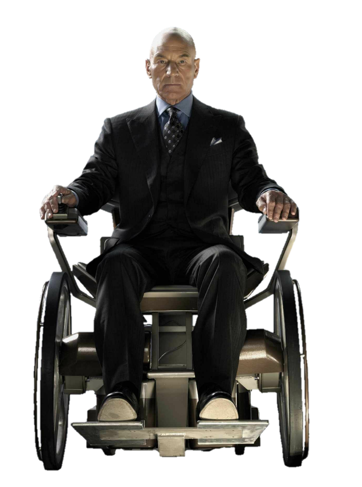

A MOMENT OF SILENCE
Sir Patrick Stewart as Charles Xavier in X-Men(1993)

This page is dedicated to Sir Patrick Stewart and his portrayal of Professor Charles Xavier in the X-Men series. We celebrate his contributions to the franchise and his impact on fans worldwide.
Patrick Stewart's commitment to the role of Professor X has been a defining aspect of the X-Men movies, bringing depth and gravitas to the character.